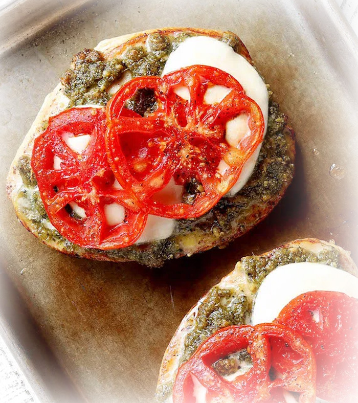

Pesto Chicken

Healthy. Juicy. Delicious. Oh, and So Easy!
Pesto Chicken, it sounds fancy doesn't it? In reality this is one of the easiest recipes out there, and it's guaranteed to make you look like a pro chef. It requires only 5 minutes prep and only 4 basic ingredients: chicken, basil pesto, mozzarella, and fresh tomatoes.
What You'll Need:
- Olive Oil (or Butter)
- Salt & Pepper
- Chicken Breasts (3)
- Medium-Sized Tomatoes (2)
- Fresh Mozzarella Cheese
- Basil Pesto (1 jar; 6oz.)
Let's Get Cooking!
- Preheat the oven to 350° F. Season chicken breasts liberally with salt and pepper.
- While the oven is preheating you can heat some olive oil or butter in a skillet. Once hot add the chicken breast and sear for 1-2 minutes on each side until caramelized. The chicken should still be raw in the center.
- Arrange the seared chicken breasts onto a baking dish or rimmed baking sheet.
- Use a spoon to cover chicken with pesto.
- Top each chicken breast with 2 slices of fresh mozzarella cheese and 2 tomato slices.
- Bake for 20-30 minutes (time will vary depending on thickness of chicken) until chicken is 165º F. Broil the chicken the final 2 minutes so that the cheese is bubbly and golden. Serve immediately.
Enjoy!
Recipe by Simply Sissom